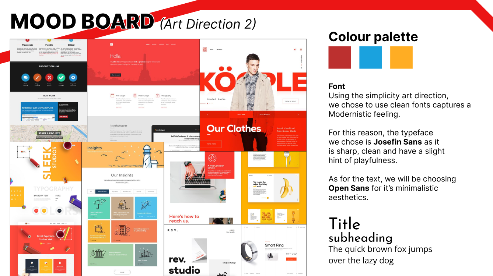

May 2022 - Aug 2022
For this school project, our team designed a webpage for Playland targeted towards parents of kids and their common worries during a family trip at an amusement park.
Alan Lam, Alan Huang, Michael Su, Sapol Pittayakornpisuth
I was the project coordinator that handled duties such as scheduling, organizing roles, and utilization of collaboration tools.
Sketching, Wireframing, User Persona/UI/UX, Mood boards, html/CSS
Figma, Webflow, Visual Studio Code
Design a microsite targeted towards parents planning to take their kids on a summer trip to Playland. Their main pain points and concerns are unknown dangers of the amusement park, getting lost/losing their kids, ride information and safety, spending budget, and weather concerns.
Parental needs and concerns are addressed by the one-stop-shop information provided on our microsite, which is aided by simplistic yet visually appealing design. Content is arranged by order of importance and icons are used to create visual support.
We created a user persona to target a user group and address their main worries, in our case it was a parent planning to bring their kids on a summer trip to Playland.
We created mood boards to find an art direction for our website, as our group were split between two different styles: a more Gradient & Dreamy approach where it was more colorful, softer geometric shapes paired with sharp shapes to break motion, and a more fluid design to provide users a sense of excitement and motion in an amusement park.
The other direction was a Simplistic & Modern style where we had flat colors, sharp geometric shapes, big icons, and clear grid designs. Which helped provide our target user with ease of navigation to easily find information to plan trips.
As a team, we each sketched out our ideas for for the website layout before deciding on elements for our website.
Our desktop wireframes were created based on a 6-grid layout and had
the necessary information condensed into one page.
A problem we faced was that the mobile design was a lot harder to
layout as it was not as wide as a webpage. It created a design where
it was tightly packed together without much negative space in between
causing users to feel anxious.
After testing and feedback from our classmates and TA, we found out a problem with both our website and mobile design were too condensed, without a lot of negative space. Our redesign took that feedback and implemented a website with more negative space, asymmetrical balance, and use of icons, graphics and textures to balance out the negatives and guide viewers eyes towards the next section.
After using Webflow to create our website and mobile designs, we ran into a lot of problems with the application. The biggest problem is that only one person can edit at a time, and that really brought down the productivity of the team as one person held a lot of the burden. We solved this problem by sharing the account and fixing things on our own time, but the website was not as flushed out as we had hoped because of time constraints and the learning curve of the software. Another problem was that changing something on the mobile side also changed the webpage side. This was a huge problem because we wanted to have floating and resizable icons on the webpage, but the grid layout of the icons are in different positions on the mobile page.